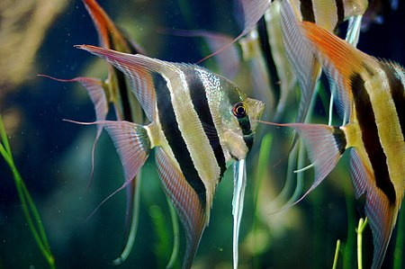

Úvod
Ryby (Osteichthyes), česky též kostnaté ryby, je parafyletická skupina primárně vodních obratlovců vyznačujících se osifikovanou kostrou (v některých případech je však kostra druhotně chrupavčitá) a skřelemi kryjícími žábry. V tradičních taxonomických systémech měly ryby postavení třídy, dnes jsou buď považovány za nadtřídu nebo pro svůj parafyletismus nejsou jako taxon užívány vůbec. Pokud by ryby obsahovaly všechny potomky posledního společného předka, zahrnovaly by i čtyřnožce včetně člověka (takto definovaná holofyletická skupina se nazývá Euteleostomi).
Mezi ryby patří dvě třídy obratlovců, nozdratí (Sarcopterygii) v parafyletickém smyslu a paprskoploutví (Actinopterygii). Zatímco paprskoploutví jsou monofyletický taxon, nozdratí (v tradičním smyslu) jsou taxon parafyletický, jelikož za potomky lalokoploutvých ryb jsou považováni obojživelníci a další třídy strunatců včetně savců (viz výše). Společná skupina nozdratých a parskoploutvých ryb je proto rovněž parafyletická.
Ryby jsou přizpůsobeny životu ve vodě, obývají sladké, brakické (smíšené) i slané vody, včetně extrémních biotopů, jako jsou sodné termální prameny, periodicky vysychající vody nebo vody podzemní. Jsou ektotermní (studenokrevné). Některé druhy ryb jsou obojživelné a určitý čas tráví na souši. Počet recentních druhů kostnatých ryb se odhaduje na 24 000–30 000. Variabilita ryb je obrovská. Patří mezi ně druhy dravé, všežravé, býložravé i parazitické, druhy žijící samotářsky, v párech i ve statisícových hejnech. Nejmenší ryby patří mezi nejmenší obratlovce vůbec (8 mm v dospělosti), zatímco jiné dosahují více než 4 metry délky. Rekordně velikou rybou, nehledě na geologická období, byl nejspíš střednějurský rod Leedsichthys s délkou až přes 20 metrů. Ryby mají nezastupitelnou roli ve vodních ekosystémech a mají také velký význam ekonomický – jsou významnou lidskou potravou, ale i předmětem obchodu pro okrasné účely a akvaristiku.
> Anatomie a fyziologie ryb
Trávicí soustava
Ryby přijímají potravu ústy (ústa mohou být horní, dolní nebo koncová). V dutině ústní se mohou vyskytovat zuby, ale neprodukují sliny. Za dutinou ústní se nachází hltan. Na jeho dně jsou u některých skupin umístěny požerákové zuby, které vznikly přeměnou pátého páru žaberních oblouků. Požerákové zuby slouží k zachycení potravy. Trávicí trubice pokračuje jícnem, žaludkem (u některých ryb se nevyskytuje), střevem, ve kterém jsou pylorické výběžky s funkcí sekrece trávicích enzymů. Součástí trávicí soustavy jsou i játra, slezina, žlučník, slinivka břišní.
Koncové střevo (též tlusté střevo) je posledním úsekem trávicí trubice. Zbytkům potravy je zde odnímána voda a tvoří se tak pevné výkaly. Trávicí trubice končí řitním otvorem, který ústí na břiše, většinou těsně před řitní ploutví. S výjimkou dvojdyšných je řitní otvor vždy samostatný, nespojený s vývodem jiné orgánové soustavy.
Požerákové zuby vznikly přeměnou pátého páru žaberního oblouku u ryb. Jsou umístěny v hltanu některých druhů ryb (například u bolena, kapra, pstruha, plotice, střevle...). Rybám pomáhají polykat, posouvat potravu dále do jícnu a u mnoha ryb mechanicky trávit potravu. Požerákové zuby mohou být různého tvaru – špičaté, ploché, tupé. Většinou jsou uspořádány v jedné nebo třech řadách na požerákové kosti. Požerákové zuby jsou také možným rozlišovacím a identifikačním znakem ryb. Pro každý druh ryby je uspořádání a počet požerákových zubů typický a ozubení lze je zapsat vzorcem.
Vylučovací soustava
Odpadní produkty metabolismu jsou vylučovány různými způsoby. Oxid uhličitý je vylučován žábrami nebo přídatnými dýchacími orgány. Žábry se také podílí na vylučování dusíkatých látek a nadbytečných iontů. Další odpadní sloučeniny, jako např. produkty rozkladu hemoglobinu, jsou vylučovány trávicí soustavou a z těla odcházejí spolu s výkaly. Specializovanou vylučovací funkci mají ledviny, odstraňující z krve škodliviny, zejména dusíkaté látky vznikající při rozkladu bílkovin. Odpadní dusíkaté látky mohou být u obratlovců obecně vylučovány ve třech základních formách – jako amoniak, močovina, či jako kyselina močová. Základní formou odpadního dusíku u ryb je amoniak, v menší míře se využívá i močovina. Obě tyto látky jsou velmi dobře rozpustné ve vodě a mohou být efektivně vylučovány do okolního prostředí nejen ledvinami, ale i žábrami. Kyselinu močovou, která se ve vodě rozpouští velmi špatně, ryby nevyužívají. Ledviny zároveň regulují obsah vody a iontů v těle a zajišťují tak stále vnitřní prostředí.
Ledviny jsou u ryb uloženy pod páteří. Většinou jsou párové, u některých ryb (např. lososovití) srůstají v jediný nepárový orgán. Moč je z ledvin odváděna močovody, v některých případech je vyvinut i močový měchýř a z něj vycházející nepárová močová trubice. Močové cesty ústí samostatnými otvory na močopohlavní bradavce (urogenitální papile), která je umístěna mezi řitním otvorem (kloakou) a řitní ploutví.
Sladkovodní ryby žijí v hypotonickém prostředí, osmoticky proto přijímají velké množství vody skrze žábry a další tělesné povrchy. Přebytečnou vodu vylučují ledvinami v podobě velmi řídké moči. Přestože je obsah iontů v moči velmi nízký, dochází tímto způsobem k citelným ztrátám. Ionty jsou nahrazovány potravou a výměnou odpadních amonných kationtů za kationty sodné v žábrách. Mořské ryby žijí naopak v hypertonickém prostředí a vodu proto osmoticky ztrácí. Ztráty vody doplňují pitím. Přebytečné soli vylučují silně koncentrovanou močí a žábrami. Amoniak je vylučován ledvinami i žábrami.
Dýchací soustava
Žábry
- Primárním dýchacím orgánem ryb jsou čtyři páry žaber kryté skřelemi, umístěné na kostěných žaberních obloucích v žaberní dutině. Žábry jsou tvořeny bohatě prokrvenými žaberními lístky s velmi jemnou kapilární sítí. Krev a voda omývající žábry jsou zde odděleny jen velmi tenkou kapilární stěnou, která umožňuje výměnu dýchacích plynů prostou difúzí na základě rozdílu parciálních tlaků.
- Kromě dýchání se žábry významně podílí i na vylučování odpadních dusíkatých látek (zejména ve formě amoniaku), a udržování rovnováhy vody a iontů.
Přídavné dýchací orgány
- Mnoho druhů ryb žije ve vodách s velmi nízkým obsahem kyslíku a některé jsou dokonce obojživelné. U těchto druhů se vyvinuly různé přídavné dýchací orgány sloužící k dýchání kyslíku vzdušného. U některých druhů je dýchání vzdušného kyslíku jen doplňkové. Jiné druhy (ačkoliv mají zachované žábry) jsou na něm závislé a v případě nemožnosti nadechnutí na hladině se utopí.
- Labyrintky (ryby podřádu Anabantoidei) získaly své jméno podle labyrintu, kostěného lamelovitého útvaru vzniklého z horní části prvního žaberního oblouku a pokrytého hustě prokrvenou sliznicí. Labyrintky vdechují tlamkou na hladině vzduch, bublina se dopraví do žaberní dutiny k labyrintu, kde dochází k výměně dýchacích plynů. Mezi labyrintky patří i lezoun indický (Anabas testudineus), který opouští vodu a dokáže se pohybovat až několik set metrů po souši. Období sucha přežívá zahrabaný v bahně.
- Někteří sumci, a to pancéřníčci (čeleď Callichthyidae) a někteří krunýřovci (čeleď Loricariidae) vyvinuli střevní dýchání. Vzduch na hladině polykají, bublina prochází trávicím traktem, až v určité části střeva (u některých krunýřovců žaludku) dochází k výměně plynů. Pak vzduch vychází z těla řitním otvorem. I mezi těmito rybami jsou druhy, které dokážou přežívat období sucha zahrabáni v bahně. Střevní dýchání se kromě sumců vyvinulo i u některých sekavcovitých (čeleď Cobitidae), např. v Česku žijícího piskoře pruhovaného (Misgurnus fossilis).
- Jiní sumci, keříčkovci (čeleď Clariidae), vyvinuli další typ přídavného dýchání. Je jím keříčkovitý útvar vzniklý z druhého až čtvrtého (někdy jen druhého a čtvrtého) žaberního oblouku a vybíhající dozadu do protažené žaberní dutiny. Keříčkovci často opouští vodu a na souši i hledají potravu. Keříčkovci čeledi Heteropneustidae mají k dýchání vzdušného kyslíku dvě dlouhé vakovité trubice vybíhající dozadu podél páteře. I oni jsou schopni pohybovat se po souši.
Smysly a smyslové orgány
Zrak
- Zrak je pro většinu denních ryb velmi důležitým smyslem. Je využíván pro orientaci v prostoru, vyhledávání potravy, detekci nebezpečí i pro komunikaci s jedinci vlastního druhu. Ryby mají dvě komorové oči bez víček umístěné obvykle po stranách hlavy. Vzhledem k omezené viditelnosti ve vodním prostředí je rybí oko v klidu zaostřeno na blízko. Přeostření na dálku se neprovádí změnou tvaru čočky, jako např. u savců, ale přiblížením celé čočky směrem k sítnici.
- Ryby vnímají přibližně stejný rozsah vlnových délek světla jako lidé, tedy asi 400–750 nm. Většina ryb vidí barevně. Světlo o delší vlnové délce ale hůře proniká vodním sloupcem, a proto řada druhů žijících ve větších hloubkách či kalných vodách nemá schopnost vnímat červenou barvu.
- Ryby trvale žijící v úplné tmě mívají oči částečně nebo zcela redukovány.
- Občas narazíme na poraněnou rybu v oblasti oka, nebo oko dokonce chybí. Neznamená to však pro rybu rozsudek smrti. S ostatními smysly si vystačí a hlavní úlohu má postranní čára. Ta zaznamenává proudění vody a změny tlaku. Umožňuje tak rybě určit jak vlastní polohu, tak i polohu překážky nebo kořisti.
Čich
- Čich je chemický smysl, jehož informace jsou přímo převáděny do čelních oblastí mozku skrze první hlavový nerv. Čich slouží nejen k vyhledávání potravy (ve spolupráci s chutí), ale i k dalším účelům, jako je detekce nebezpečí, vyhledávání partnera, udržování hejna, péče o mláďata či vyhledávání trdliště u tažných ryb (např. u lososů).
Chuť
- Chuť je chemický smysl založený na funkci chuťových pohárků, ze kterých je informace přenášena do mozku sedmým, devátým a desátým hlavovým nervem. Chuťové pohárky jsou u ryb ovšem umístěny nejen v dutině ústní a začátku hltanu (zejména na patře, ventrálním epitelu a žaberních tyčinkách, ne však na jazyku jako u suchozemských obratlovců), ale i na částech vnějšího povrchu těla, jako jsou pysky, vousky či ploutve. U některých sumců a kaprovitých jsou chuťové pohárky rozprostřeny po povrchu celého těla. Chuťové pohárky na vnějším povrchu těla umožňují vnímat i relativně vzdálené podněty. Chuť tak u ryb do jisté míry funkčně splývá s čichem. Přesto se však zdá být využívána výhradně ve spojitosti s vyhledáváním a příjmem potravy.
Sluchorovnovážný orgán
- Skládá se ze třech polokruhovitých chodbiček, dvou váčků a otolitů, které umožňují zjištění polohy těla.
Hmat
- Tzv. postranní čára je zvláštní smyslový orgán nacházející se na boku ryby, má velký význam pro pohyb ryb v kalné vodě – umožňuje hmatové vjemy.
Pohlavní soustava a rozmnožování
Determinace pohlaví
- U ryb se vyskytuje chromozomálně i hormonálně určené pohlaví. U většiny ryb je heterogametickým pohlavím samec (systém XY), u menšiny samice (systém ZW).
> Etologie ryb
Zvukové projevy
Řada ryb vydává zvuky jako komunikační prostředek. Jedním ze způsobů je stridulace.
Rozmnožování ryb
Většina ryb jsou gonochoristé, vyskytuje se však klasický i postupný hermafroditismus. V některých případech se vyskytuje partenogeneze. U některých druhů je výrazný pohlavní dimorfismus, u jiných je pohlaví obtížně odlišitelné. U většiny ryb dochází k vnějšímu oplození v procesu zvaném tření. U některých ryb však dochází k vnitřnímu oplození.
Péče o potomstvo
Nějaký typ péče o potomstvo se vyvinul asi u pětiny známých druhů ryb.
Afrofilní ryby jsou ryby, které staví na hladině nebo pod listem rostliny ve vodním sloupci pěnová hnízda. Patří mezi ně velcí pancéřníčci (rody Callichtys, Hoplosternum, Dianema), většina druhů labyrintek (podřád Anabantoidei) a tetrovitá ryba Hepsetus odoë. Pěnová hnízda staví obvykle samec z bublinek tvořených ústním sekretem a případně úlomků rostlin.
Sociální učení a kulturní dědičnost
U různých druhů ryb bylo pozorováno sociální učení, uplatňující se při výběru partnera i v dalších situacích. Například v některých populacích živorodky duhové, samice s geneticky podmíněnou preferencí barevných samců volí samce nebarevné, pokud takovou volbu spatřily u jiných samic. Napodobování výběru partnera bylo zaznamenáno i u dalších rybích druhů, v akváriích i ve volné přírodě. Takto získané preference výběru partnera, přestože jsou v rozporu s geneticky podmíněnými preferencemi, mohou být udržovány dlouhodobě, předávány v populaci dál a jsou tak předmětem kulturní dědičnosti a evoluce.
> Biotopy
Podle vodního prostředí, ve kterém žijí, dělíme ryby na:
- Sladkovodní – žijí ve sladké vodě
- Brakické – žijí v brakické vodě (směs sladké a mořské vody, například v ústí řek)
- Mořské – žijí ve slané vodě (moře a oceány)
- Tažné – ty se dále rozdělují:
- Anadromní – žijí ve slané vodě, ale rozmnožují se ve sladké vodě (např. losos)
- Katadromní – žijí naopak ve sladké vodě, ale rozmnožují se ve slané vodě (např. úhoř)
- Polotažné – během života mění místa svého pobytu
> Nemoci ryb
- Aerocystitis
- Eerysipeloid (červenka)
- Ichtioftirióza (kožovcovitost)
- Povrchové zaplísnění ryb
- Rybí tuberkulóza
- Skvrnitost ryb